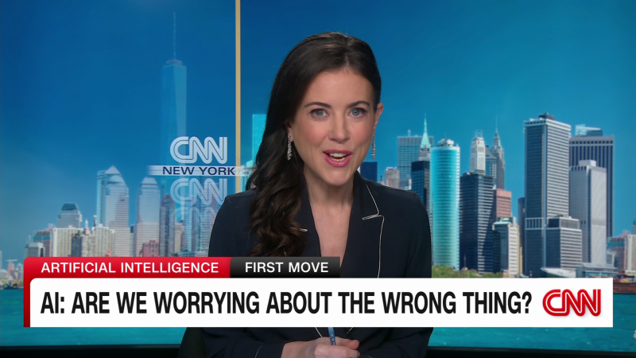

Doom and Gloom Stories are Misleading About AI, says Cohere CEO

It was a bright sunny day, and John was walking down the street when he saw a couple of people standing and talking about the recent advancements in AI. One of them looked quite worried and concerned. John approached them and asked, "What's the matter?"
The worried person turned towards John and said, "Have you heard about the doomsday scenarios people are predicting for AI? That it will take over and destroy humanity one day? It's quite concerning, to be honest."
John smiled and replied, "I can understand why you feel that way. But the truth is, these 'doom and gloom' stories are nothing but misleading and overhyped."
He went on to explain how AI technology has the potential to bring about massive positive changes in our lives, from healthcare to transportation, finance, and more. He cited several examples where AI has already made a significant impact, such as self-driving cars, virtual assistants, and medical diagnoses.
"Instead of focusing on the negative consequences that may or may not happen in the far future, we should focus on the practical applications of AI and how it can help us solve problems today," he said.
He also talked about how concerns about AI's impact on the job market are exaggerated. While it's true that some tasks might be automated, new industries and jobs are also being created because of AI technology.
Examples of AI Applications
AI is already making an impact in various industries. Here are a few examples of AI applications that have already provided significant benefits to society:
- Virtual Assistants: Siri, Google Assistant, and Alexa are some of the most popular virtual assistants today. They help us with everyday tasks such as setting reminders, sending messages, and answering questions.
- Healthcare: AI is being used to develop new drugs, diagnose diseases, and even predict patient outcomes. It has the potential to revolutionize the healthcare industry entirely.
- Transportation: Self-driving cars are touted as the future of transportation. They could drastically reduce traffic accidents and improve overall traffic flow.
- Finance: AI algorithms can process enormous amounts of data and provide insights that enable investors to make smarter decisions.
Conclusion
In conclusion, it's essential to recognize that AI technology has the potential to bring about massive positive changes in our lives. While it's true that some concerns about its impact on society are valid, the doomsday scenarios that are often portrayed in the media are misleading and exaggerated.
Here are three key points to bear in mind:
- Focus on practical applications: Rather than focusing on negative consequences that may or may not happen in the far future, focus on practical applications of AI and how it can help us solve problems today.
- Recognize the benefits: AI technology has provided significant benefits to society in various aspects, such as healthcare, transportation, and finance.
- Don't overhype concerns: While it's true that concerns exist regarding AI's potential impact on society and jobs, these risks should not be overhyped and exaggerated.
References URLs
- https://www.wired.com/story/the-doomsday-scenario-for-ai-false-expectations/
- https://www.forbes.com/sites/forbestechcouncil/2019/09/20/the-impact-of-ai-on-jobs-in-the-transportation-industry/?sh=354401bc48f7
- https://www.cnbc.com/2019/08/28/artificial-intelligence-in-healthcare-pros-cons-and-a-look-to-the-future.html
Hashtags
- #AItechnology
- #positivechanges
- #practicalapplications
- #benefitstosociety
- #jobmarketconcerns
- #dontoverhype
SEO Keywords
- AI technology
- Positive changes
- Practical applications
- Job market concerns
- Benefits to society
- Doom and Gloom Stories
Article Category
Technology
Curated by Team Akash.Mittal.Blog
Curated by Team Akash.Mittal.Blog
Share on Twitter Share on LinkedIn